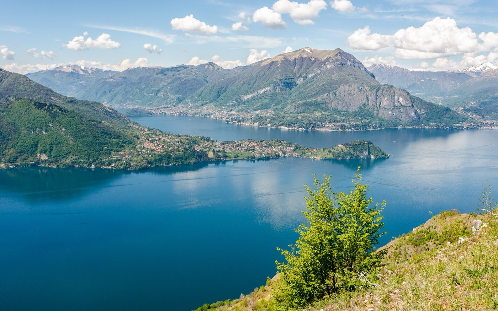
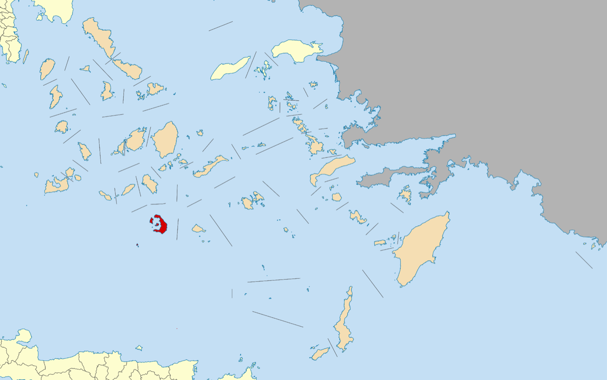
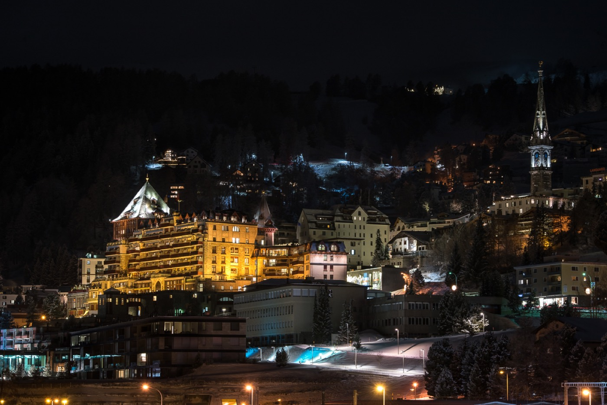
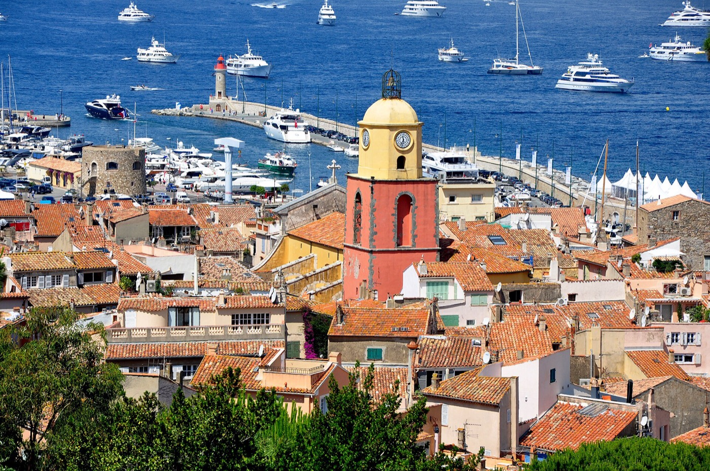
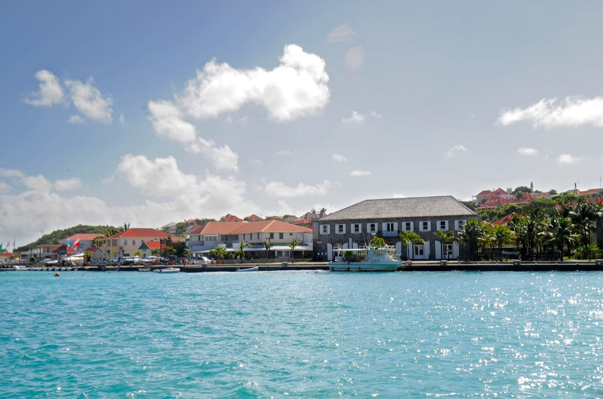

My Favorite Spots
Lake Como

Lake Como sits at the foot of the Alps with villages built straight into the shoreline and
villas that have been there for centuries. It is the calmest expensive place I can think of,
and the mountains drop right into the water.
- Province/State: Lombardy
- Country: Italy
- Surface area: 146 km²
- Latitude & longitude: 46.0000 N, 9.2667 E

Santorini

Santorini is a Greek island built on the edge of an old volcano. The white houses with blue roofs
over the cliffs are probably the most famous view in the Mediterranean.
- Province/State: South Aegean
- Country: Greece
- Population: 17,430
- Latitude & longitude: 36.4150 N, 25.4325 E

St. Moritz

St. Moritz is a town in the Swiss Alps that has hosted the Winter Olympics twice. Frozen lake,
serious mountains, and the kind of quiet you only get at 1,800 meters.
- Province/State: Grisons
- Country: Switzerland
- Population: 4,928
- Latitude & longitude: 46.4972 N, 9.8378 E
Saint-Tropez

Saint-Tropez is a small fishing port on the French Riviera that turned into the summer capital
of the Mediterranean. The old town never got rebuilt, so it still looks like the village it was.
- Province/State: Var
- Country: France
- Population: 3,582
- Latitude & longitude: 43.2697 N, 6.6386 E
St. Barths

St. Barthelemy is a French island in the Caribbean, small enough to drive across in half an hour.
Gustavia harbour, clear water, and French food on a volcanic rock in the middle of the Atlantic.
- Province/State: Overseas collectivity
- Country: France
- Population: 10,124
- Latitude & longitude: 17.8977 N, 62.8342 W